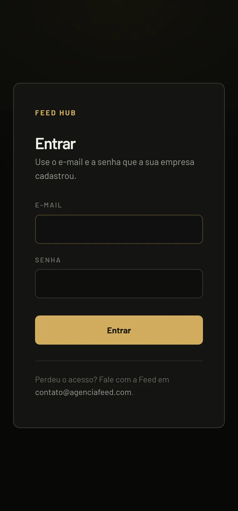
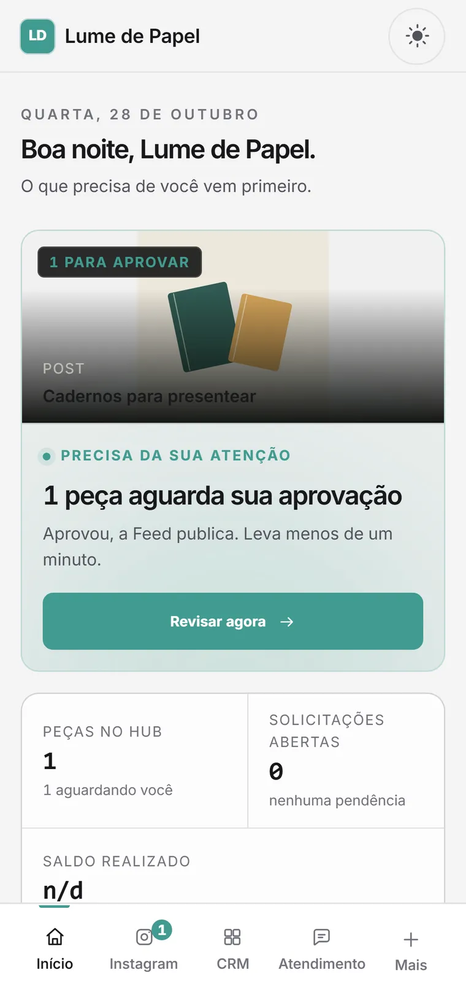
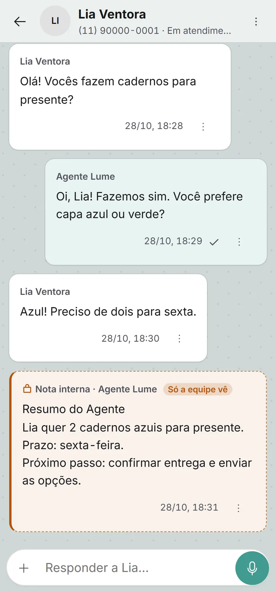
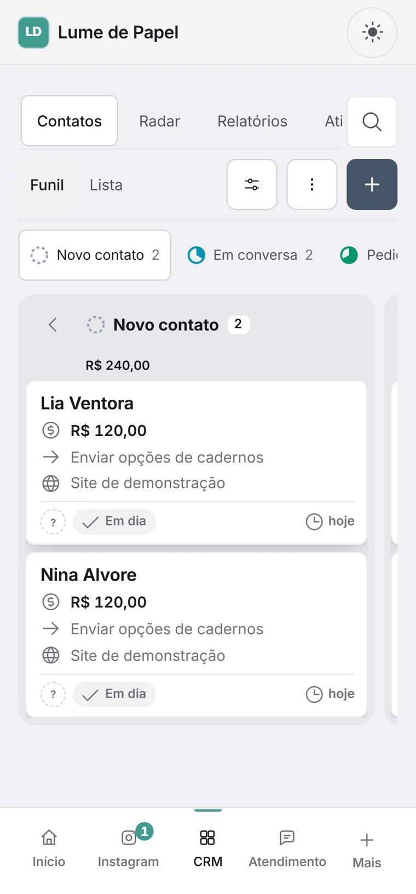
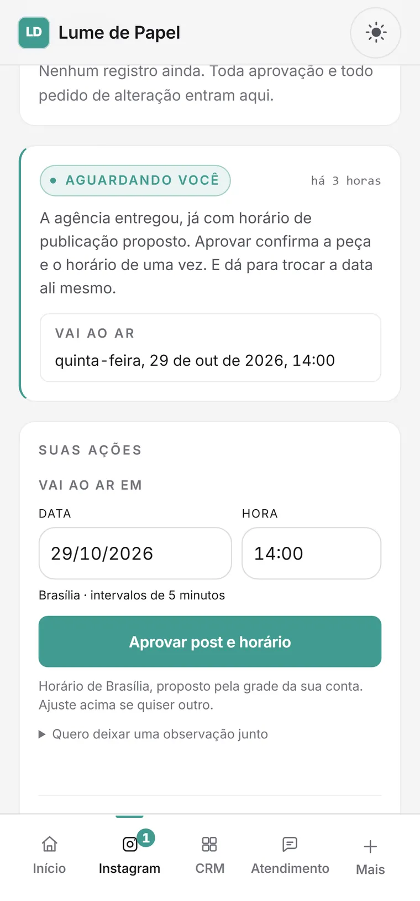
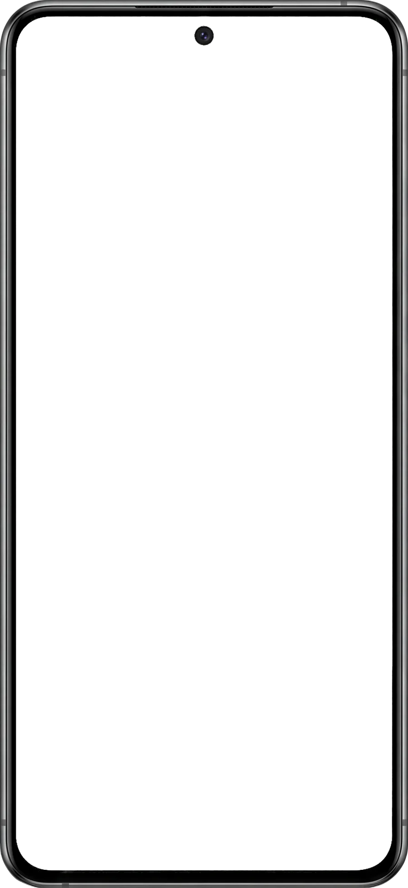

Agência de IA aplicada · Interior de SP
A Feed encontra onde a sua operação trava e instala o que resolve, rodando na sua rotina. Nada de ferramenta solta.
Grátis. O PDF chega no seu e-mail na hora.
Toda empresa tem um lugar onde trava.
Hoje quem responde o WhatsApp, lembra de quem sumiu, monta o orçamento, posta no Instagram e cobra o retorno é você.
O cliente pergunta e ninguém responde. O orçamento fica pra amanhã. Quem sumiu não recebe retorno. O post não sai. Não é falta de esforço: é a operação inteira passando pela sua mão.
Isso sai da sua mão
- Responder a mesma pergunta
- Lembrar quem sumiu
- Montar orçamento
- Postar no Instagram
- Mandar o link da agenda
- Passar o resumo pro vendedor
- Calcular frete
- Atender fora do horário
- Preparar relatório
- Cobrar o retorno
- Aprovar post
- Mandar proposta
Antes1 / 3
O cliente pergunta às 23h. Ninguém responde.
Role, e a cortina passa
Com a Feed1 / 3
O Agente responde na hora e deixa o resumo pronto pra equipe.
Capítulo 02 · Agente de IA no WhatsApp
Antes2 / 3
O lead some e ninguém lembra de chamar de volta.
Com a Feed2 / 3
Cada oportunidade numa etapa. Quem sumiu recebe retorno.
Capítulo 02 · Funil de vendas
Antes3 / 3
A empresa para quando você não está.
Com a Feed3 / 3
A rotina roda. Você vê primeiro o que precisa de você.
Capítulo 03 · O Feed Hub
Nada de ferramenta solta.
A Feed instala o que resolve e liga na sua rotina. Você não escolhe ferramenta: a gente começa por onde a sua operação mais trava.
-
01No WhatsApp
Agente de IA no WhatsApp
Responde na hora, 24 horas. Resolve o simples, deixa um resumo pronto e passa pro humano quando a conversa pede.
ExemploCliente, 23h12Vocês abrem sábado?
AgenteAbrimos sim, das 8h às 12h. Quer que eu reserve um horário pra você?
-
02Funil de vendas
Funil de vendas (CRM)
Cada oportunidade numa etapa. Quem sumiu recebe acompanhamento automático. A proposta sai em PDF, montada e enviada pelo celular.
Exemplo- Novo contato
- Em conversa
- Proposta
- Fechado
-
03Redes
Instagram no automático
Posts agendados e publicados sozinhos, com as métricas à vista. Comentário com palavra-chave vira mensagem direta.
ExemploComentou AGENDA no post.
Recebeu o link na mensagem direta, na hora.
-
04Marketing
Marca, conteúdo, site e SEO
O lado do marketing, quando ele serve à operação. Marca clara, conteúdo com rumo, um site que explica e quem procura te encontra.
Na prática- Marca
- Conteúdo
- Site
- SEO
-
05Pelo chat
Agentes especialistas
Uma equipe de agentes que faz tarefa pelo chat. Você pede do jeito que fala, eles entregam.
Exemplo“Calcula o frete até Bebedouro.”
“Monta o orçamento do João.”
“Prepara o relatório da semana.”

No ar no Google Play
desde 09/11/2026
Sua empresa na palma da mão.
Fig. 1Entrar. A equipe inteira num app só: atendimento, vendas e aprovações.
Veja primeiro o que precisa de você.
Fig. 2Início. O que pede a sua decisão aparece no topo, antes de tudo.
O Agente deixa o resumo pronto.
Fig. 3Atendimento. O WhatsApp com cara de WhatsApp, e a nota do Agente só pra equipe.
Cada oportunidade no seu lugar.
Fig. 4Funil. Cada contato numa etapa, com valor, próximo passo e prazo.
Aprove seus posts pelo celular.
Fig. 5Aprovar. A peça chega com horário proposto. Um toque confirma, e você recebe aviso no celular.






Atendimento, vendas e aprovações no celular.
- Atende o WhatsApp
- Vê o que precisa dela
- Acompanha o funil
- Aprova posts e orçamentos
- Recebe aviso no celular
O Feed Hub é o app onde o cliente da Feed opera tudo. Está no ar no Google Play desde 09/11/2026. iPhone vem depois. As telas acima são reais, com dados de demonstração.
Três passos. Nenhum time de TI.
-
Passo 1
Diagnóstico do Gargalo
Você deixa nome e e-mail e recebe um PDF curto que mostra onde a operação para quando você não está. Depois, se fizer sentido, conversa com o Guilherme.
Quero o diagnóstico -
Passo 2
Implantação
Uma proposta com escopo, prazo e valor do seu caso. A Feed monta, conecta e treina quem vai usar. Sem time de TI do seu lado.
-
Passo 3
Acompanhamento
Manutenção mensal quando o projeto pede. O preço é do seu caso: implementação com manutenção, ou serviço pontual.
Ver quanto custa
Numa revenda de veículos do interior de SP, o Agente da Feed atende o WhatsApp. A equipe responde e manda proposta pelo celular, no Hub. E o funil acompanha cada lead.
- Atendimento
- 24 horas, com o Agente
- Equipe
- 1 app no celular
- Funil
- Cada lead numa etapa
- Volume
- [número a confirmar]
Cliente real, nome preservado. Aqui não entra número que a gente não pode provar.
O que todo mundo pergunta antes de começar.
01O que uma agência de IA faz na prática?
Encontra onde sua operação perde tempo e dinheiro e resolve com tecnologia: atendimento que responde sozinho, processos que rodam sem ninguém empurrar, marca e aquisição organizadas. Na Feed isso começa com um diagnóstico da operação e termina com a solução implementada e rodando na sua rotina.
02Quanto custa contratar a Feed?
O preço é personalizado. Primeiro a gente entende onde a sua operação trava, depois monta uma proposta com escopo, prazo e valor do seu caso. O valor muda com quantos sistemas a gente conecta, o volume de atendimento e a organização das informações. A IA é um adicional opcional: entra só se fizer sentido pro seu negócio e, quando entra, muda o valor da proposta. Veja como funciona em quanto custa ou comece pelo Diagnóstico do Gargalo.
03Automação de WhatsApp não vai irritar meus clientes?
Robô burro irrita. Automação bem feita responde na hora, resolve o que é simples e passa pro humano quando a conversa pede. Seu cliente ganha resposta imediata e seu time para de perder o dia repetindo a mesma informação.
04Preciso de time de TI pra automatizar a empresa?
Não. A Feed implementa e treina quem vai usar. Se o projeto tiver manutenção, a Feed acompanha depois da entrega. Você não precisa contratar ninguém nem entender de tecnologia: precisa saber onde sua operação trava, e isso a gente descobre junto. A IA não é obrigatória. Ela entra como adicional só se fizer sentido pro seu negócio e, quando entra, muda o valor da proposta.
05Em quanto tempo fica pronto?
Depende de quão claras estão as respostas, de quantas integrações tem e do volume de exceções. O prazo de cada projeto vem escrito na proposta. A gente prefere entrega rápida e escopo enxuto a projeto grande que nunca termina. Se quiser começar já, o Diagnóstico do Gargalo chega no seu e-mail na hora.
06A Feed atende só a região de Ribeirão Preto?
A base é a região de Ribeirão Preto e Bebedouro, no interior de SP, com atendimento presencial quando faz sentido. Fora da região, o atendimento é remoto, em qualquer lugar do Brasil.
07O que é o diagnóstico gratuito?
Você deixa nome e e-mail e recebe no seu e-mail, na hora, o Diagnóstico do Gargalo, um PDF curto que mostra onde a operação para quando você não está, o que mais consome seu tempo e o primeiro passo pra tirar a empresa das suas costas. Depois, se fizer sentido, você conversa com o Guilherme sobre o seu caso. Não custa nada. Comece em agenciafeed.com/diagnostico.
Fim do manifesto. Começo do seu.
O Diagnóstico do Gargalo é grátis. Você deixa nome e e-mail e recebe o PDF na hora. Depois, se fizer sentido, conversa com o Guilherme.